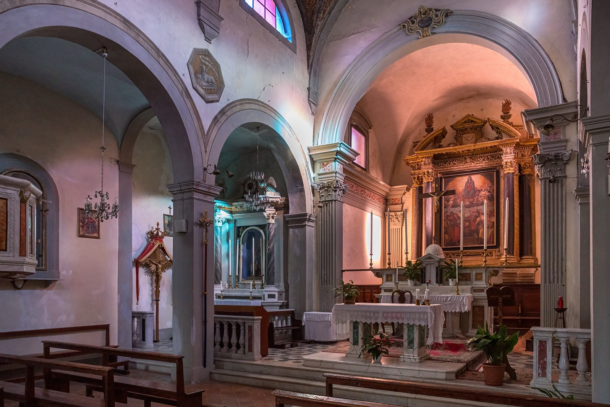

Chiesa di Santa Maria Assunta
Tre navate, un antico fonte battesimale e un organo del Seicento. Sull'altare maggiore, la pala dell'Assunzione di Giovanni Maria Graziani del 1546.
Ricordata dal 1260, è la chiesa della Festa di Santa Maria. Secondo alcuni studiosi conserva l'abside di un'antica chiesa di Sant'Anna.